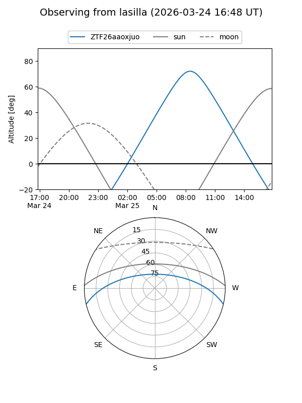
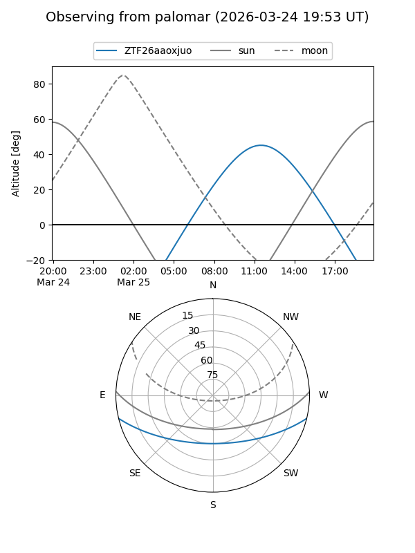

ZTF26aaoxjuo
Target ZTF26aaoxjuo at 2026-03-25 12:16
Aliases and brokers:
FINK: link
Lasair: link
ALeRCE: link
alt names
ZTF26aaoxjuo (ztf,fink_ztf)
Coordinates:
equatorial (ra, dec) = 238.2605,-11.39558
equatorial (HMS+DMS) = 15:53:02.53,-11:23:44.09
galactic (l, b) = (357.8795,+31.49897)
Flags:
Photometry:
last ztfg=17.01, ztfr=16.02
1 ztfg, 1 ztfr detections
Lightcurve
Visibility


Additional plots